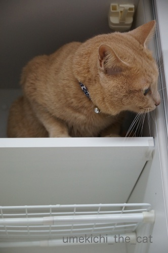
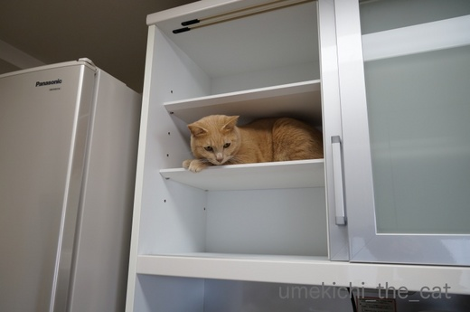
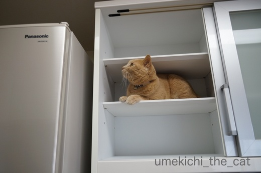
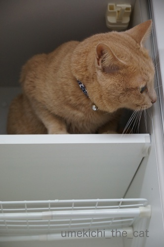
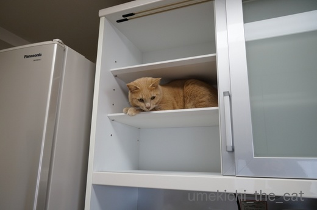
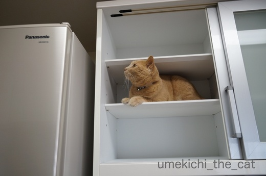

猫のいる家の年末の風物詩（なのか！？） [梅吉]
12月も中旬。
大掃除、はしませんが中掃除らしきものをぼちぼちしております。
先日はキッチンの棚の中の掃除。
ごそごそしていると「あのお方」が当然やって来ます。

そこに見えるカフェオレ色の物体は一体なんでしょうか？

![[猫]](https://blog.ss-blog.jp/_images_e/101.gif) あいてたから はいってみたで
あいてたから はいってみたで

そうじぐあいも ちぇっくせなあかんねんで

ここもええかんじや

わしのす（冷蔵庫の上）へのあくせすも ばつぐんや

うえのだん はどうやろか

ここも ええかんじや

もひとつうえは どないやろか
そこの隙間は掃除しました。
お好きなだけ楽しんでくださいね〜＾＾
去年もいろいろお手伝いしてもらいましたが
今年も色々、やる気満々の梅吉さんでしたー。
で、梅吉がやる気満々になるとぜんっぜん掃除が進まない・・・
 ↑ガブッと一押し↑
↑ガブッと一押し↑
大掃除、はしませんが中掃除らしきものをぼちぼちしております。
先日はキッチンの棚の中の掃除。
ごそごそしていると「あのお方」が当然やって来ます。

そこに見えるカフェオレ色の物体は一体なんでしょうか？






そこの隙間は掃除しました。
お好きなだけ楽しんでくださいね〜＾＾
去年もいろいろお手伝いしてもらいましたが
今年も色々、やる気満々の梅吉さんでしたー。
で、梅吉がやる気満々になるとぜんっぜん掃除が進まない・・・

カフェオレ色の梅吉

梅吉 2023年8月10日 永眠


梅吉と出会った譲渡会

犬猫の理由なき殺処分ゼロ
妄想広告
UMEKICHI 光

爆発的に早い！
時々攻撃的！
Thanks to Mr.Boss365
爆発的に早い！
時々攻撃的！
Thanks to Mr.Boss365

なんか楽しそう♪
「もひとつうえ」にも登れるなんて
梅吉さんのバランス感覚すごい！^^)
by yes_hama (2017-12-15 21:19)
梅吉さんは自分で登っちゃうのですか？
難しそうだけど、登れそうな。
中々、凄い。
チェク機能が働いて、綺麗になっていきますね〜
梅吉さん用に空けていたりして（笑）
by kiki (2017-12-15 21:47)
梅吉さんは、自分のためにしてくれたんだと確信してますね。
掃除の邪魔になっているとは全く思っていないです。
兎に角、楽しそうで良かったです(^^;
by riverwalk (2017-12-15 21:54)
梅吉さん♪ワクワクしてますね(*^^*)
チェックの怠りもなく
お仕事を全うしてますね！
by きぃ (2017-12-15 22:23)
(業務連絡・ガブッとできません)
梅吉さんのお手伝いは念入りですね~。出てくれるまで物がしまえないんですね。
by zombiekong (2017-12-15 23:20)
お？
カフェオレ色の物体が～ちゃくちゃくとチェックしていきますね！
満足そうだな～＾＾
物がしまえない‥写真も撮っちゃうし‥進みませんね＾＾；
by sana (2017-12-15 23:43)
あら！いらっしゃいましたね((´∀｀))
カフェオレ色のかわいこちゃん♪
あ、イイオトコでしたね(^_-)-☆
冷蔵庫の上の巣も、ピッカピカで良かったね(*^^)v
うちのあかりも、お手伝い魂のかたまりなので、
ちょっとでも隙間が空くと
ササッと入ってきます＾＾
猫の居ぬ間に…と、こそーっとやってても
振り向けばちゃーんと、スタンバっています(≧▽≦)
by マーヤ (2017-12-16 00:48)
寝てるのを確認してから作業し始めても
しっかりお手伝いに来ますからねぇ＾＾；
by ぽちの輔 (2017-12-16 06:33)
リンクがあったので、去年の様子を拝見。
あったあった！罰当たり梅吉さん(^_^;)
そんな中、中掃除頑張ってくださいませ！！
by よーちゃん (2017-12-16 10:09)
梅吉くん、そんなところからお顔を出して～。心配しちゃう過保護な私ｗ
梅吉くんにお手伝いされながらもちぃさん頑張っています！！(^-^)
ピカピカの棚で気持ちいいね。
家は・・・今年も大掃除はあきらめています。いつものように小掃除。
タラたちの邪魔もそうですが、寒くて人肌の恋しいひなちゃん。
立って歩いている私のお膝にでも座らせろと怒ります。
どう見ても今は無理でしょ！！抱っこ紐で抱いてた方がお掃除できそうだよ(^-^;
by emi (2017-12-16 11:17)
いやあ〜 梅吉さんのお掃除チェックがキビしい〜〜〜
それにしても、いろんなところ、乗れちゃうんですにゃあ♪
･･･あっ、ちなみに、去年の仏いじめが、おもしろうてアカンわ〜(^O^)／
by のらん (2017-12-16 11:32)
ちぃさん&先生へ、おはようございます。
突然のお願いで恐れ入りますが、来週の後半で先生の画像を一枚借用願えませんでしょうか。ご検討のほどよろしくお願い申し上げます。
お願いまで。(_ _)
by KENT0mg (2017-12-16 11:48)
梅吉さんの自由奔放な生活が素敵です(^^)
それにしても身軽ですね(^o^)
by kou (2017-12-16 12:42)
これだけ掃除チェックが入るとなると
手を抜けませんね(笑)
by 響 (2017-12-16 14:50)
棚や押し入れに隙間を作ったら負けですね(^▽^;)
冷蔵庫に続いて梅吉さんの巣になってしまそう？！
こてつのおかげで、日々小掃除する羽目になっているので、大掃除はしません！(*^▽^*)
by ゆきち (2017-12-16 17:08)
本当に本当に好奇心いっぱいのお子なのねー♪
こんな子が側にいたら、お掃除もすっごく楽しいでしょうねー♡
by Ginger (2017-12-16 17:22)
梅吉さん結構高い所にも登っちゃうのですね！
結構ヒゲが長いですね(^^)
by ma2ma2 (2017-12-16 19:03)
梅吉さんチェック、なかなか厳しいですねぇ( ^ω^ )
お猫様のお手伝いは、嬉しいのですが、何も進まなくなっちゃうんですよねぇ(⌒-⌒; )
大掃除らしきものは３０日か３１日の予定です=(^.^)=→あくまでも予定w
by ニッキー (2017-12-16 22:13)
ていうか！
中？掃除の必要もないくらい綺麗にされていますね！！
我が家なんて我が家なんて・・・まだ４年なのにこのありさま・・・(｡-_-｡)
梅吉モップのすす払い、フル稼動ですね！（笑）
by Ja-Kou66 (2017-12-17 01:11)
出た！お手伝いし隊！！ウチにも出動します〜（お手伝いという名の邪魔という事は内緒です）
普段開けない所を開けようもんなら寝ていてもすっ飛んで来て「どこや？何すんのや？どれなんや？」と気づくと足下にいます…
なかなか進まないのが悩みの種ですねw
梅吉師匠のご指導と完了チェックでちぃさん家はピカピカな事でしょう♪（居心地良いのはそのせいか！）
梅吉は〜ん！お母はんのお手伝いに忙しそうやな〜！お手伝い姿がキマッてるやん♪ウチもお手伝い頑張るでって言うてんのに、断られるねん。なんでやろか…？
by くつしたにゃん (2017-12-17 12:23)
梅吉さん、狭いところも見逃さず、仕事熱心ですね〜♪
by nachic (2017-12-17 13:02)
梅吉君も頑張ってお手伝いしたのですねー^^
去年の記事も見てきましたよ(笑)
笑っちゃったわｗｗ
我が家も大掃除はナシかな。このあいだのタコパでお客さんが来たから
そのときに大掃除頑張ったから^m^
あとは、窓ガラス掃除程度で終わりかなー
by リュカ (2017-12-18 10:10)
そうなんですよね。大掃除となるとネコたちはどこへ？となるんですよね。中掃除をちょこちょこ うちもそれでいきます!(^^)!
by palpal (2017-12-18 14:37)
yes_hamaさん＞
梅吉にとってはアスレチックジムみたいな感覚なのでしょうね〜＾＾
嗅ぎ慣れない匂いのするもの（スパイスとか）がたくさん出て来て
大興奮でもありましたw
kikiさん＞
レンジフードを伝って、冷蔵庫の上から、ひょいひょいとやって来ます^^;
（あ！決して私の仕込みではありませんよー）
我が家の基準は「梅吉に害のないように」なので
下僕は感性を研ぎ澄ませてお掃除します。
「ここはいいかなぁ・・・」なんて手を抜いた隙間に限って
梅吉が入っていきますから・・・^^; ^^;
riverwalkさん＞
そうです！「すきまは わしのためにある」と思っていますからw
梅吉が手伝いをし始めたら手早く済ませる、から
どれだけ楽しんでもらえるか、に予定変更になりますwww
きぃさん＞
「つぎは どのすきまにはいったらええんやろか？」と
お目目キラキラさせていましたよ^^;
この調子で冷蔵庫の掃除の時も庫内に入っていきます(꒦ິ⌑꒦ີ)
勤勉ぶりに脱帽です。。。
zombiekongさん＞
全ての空いたスペースに入って来ますよ^^;
が、飽きっぽいので助かりますー！！
業務連絡ありがとうございましたm(_ _)m
sanaさん＞
写真を撮っている時間が一番長いかもしれません^^;
お掃除、私も梅吉も楽しみながら、ということで(^_－)☆
マーヤさん＞
寝ているものとばかり思っていたのに・・・
振り向いたら引き出しに梅吉がきっちり収納されていて
「わぁ！」とびっくりすることもよくあります^^;
猫の手も借りたい、
なんて言った人は猫飼っていなかったんじゃないかなと思います。
忙しい時は猫には寝ていてもらうのが一番だものー！！
ぽちの輔さん＞
そうそう！振り向いたらお目目キラキラしながら
参加宣言されて・・・^^;
そんな日は「捗らないな」と諦めることにしていますw
よーちゃん＞
あははＯ(≧▽≦)Ｏ神様だったら祟られそうだけど
仏様は心が広いから大丈夫(^_－)☆・・・なはず〜w
梅吉のお手伝いを計算に入れて予定を立てると
お掃除箇所を大幅に減らさなければならないことが
判明しました！！！
emiさん＞
ひなちゃん、お膝わんこなのね♡
お母さんが大好き＆犬種的に寒がりなのかな？
そんな可愛い子がいたらお掃除なんてなしでOK!!
抱っこ紐であやしながら家事をするemiさん・・・
想像して笑っちゃいましたw
作品展やっぱり行けませんでした・・・残念！
のらんさん＞
梅吉に登れないところは無い・・・身軽なのもあるけれど
「行きたい！」と思ったら執念でやり遂げる漢、梅吉です^^;
あまりのがんばりに「はいはいはいはい」と思わずお手伝いをしちゃう
甘い飼い主でもありますw
仏いじめ、仏様は心が広いから許していただけたもの、と確信して降りますwww
by ちぃ (2017-12-18 15:05)
ちぃさん、エライっ！
もうお掃除スタート＆棚のフキフキなんて、できそうでできないっ！！ｗ
私は……、窓とサッシのチョイ拭きで、年末掃除としちゃおっかな（←超・手抜き）
それにしても、梅吉さんチェックは厳しそうですから、
俄然、気合も入りますね～(^^♪
高い場所でご満悦の梅吉さん。
低い床上なら、チェックは甘くなるのでしょうか～ｗｗｗ
by morichan (2017-12-18 16:13)
KENT0mgさん＞
おおお！クリスマス頃に梅吉が登場するのですね＾＾
楽しみにしていますね♪
kouさん＞
腕白でもいい、たくましく育って欲しい（古いなぁ^^;）
と思ってのびのび育てたら自由過ぎる子になりました＾＾
でも、毎日楽しそうで羨ましいですwww
響さん＞
手抜きして掃除していない隙間に狙った様に入り込むんですよ( ；∀；)
食器棚の上や、冷蔵庫の上がそうでした・・・
ええ、今では綺麗なものですよw
ゆきち＞
空間恐怖症なのか！？と思うくらいに隙間に入り込みますよね〜。
でも物じゃなくて（かわいい）自分で埋めるので
ぜんっぜん怒る気になれません^^;
むしろ絡んで来てくれないとちょっと寂しいな・・・なんて(〃▽〃)
Gingerさん＞
ちゃんと掃除するつもりが梅吉の登場で
「まっ、いいか」みたいな結末になります^^;
梅吉が楽しんでくれれば良し！ですよね(^_－)☆
ma2ma2さん＞
猫はどこまでも高く登っちゃいますよ＾＾
降りられるかどうかは考えていません！困ったら下僕がいますので・・・
ヒゲは年々立派になっていく気がしますw
ニッキーさん＞
予定は未定ですね＾＾
大掃除しなくても新年はちゃんとやって来ますものね。
私もほどほどで手を打つ予定です→これは確定w
Ja-Kou66さん＞
梅吉があっちの隙間こっちの隙間、高いところ・・・
どんどん入ってしまうので割と頻繁に掃除をする様に
猫に躾けられてしまいました^^;
梅吉モップは大活躍ですよ！
頼んでもいない所を掃除しちゃいますからwww
くつしたにゃんさん＞
お手伝いし隊！結社があったのですね！！
梅吉の活動履歴からすると結社にかなりの貢献をしていると思われます＾＾
下僕が自分が入りたい隙間を頻繁に掃除する様に躾ける
かなり高度なミッションも成し遂げていますよー（涙）
姐さん！ことわられても ひつっこくねばるんやで
わしはけっしてあきらめんのや！！（本当に困ります・・・・）
nachicさん＞
はい。どんな狭いところも見逃しません^^;
下僕がちゃんと掃除をする様に躾けをしている模様ですw
リュカさん＞
窓ガラスって肉球印や鼻紋が沢山ついているよねー(≧ω≦｡)
下僕がちゃんと拭き掃除する様に汚すのもにゃんこの
お仕事なのかしらねw
キッチンを済ませたら私もあとはフローリングを拭くぐらいで終了です。
ここも梅吉の肉球印が満載だからー！
palpalさん＞
そうそう！気ぜわしい年末、掃除ばかりしてられませんよね＾＾
中掃除で済ませて年明け暖かくなったらちゃんと掃除する・・・
（毎年自分にそう言い聞かせている気がするーー！！）
morichanさん＞
梅吉チェックは「ここは掃除しなくても良いかな・・・」という所を
ピンポイントで攻めてくるので全くもって気が抜けません(꒦ິ⌑꒦ີ)
と言いながら私もあとは窓拭きくらいで終了の予定ですよ！
床上は・・・梅吉がモップとなってお掃除してくれますw
by ちぃ (2017-12-18 19:53)